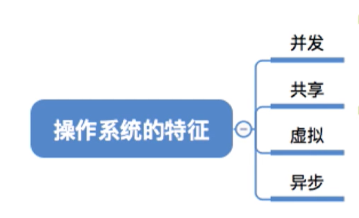
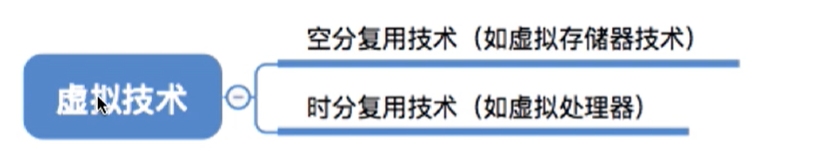
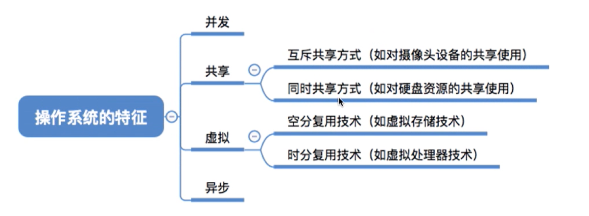

操作系统的四个特征 （二）
本文最后更新于：25 天前
知识总览

并发和共享是最基本的两个特征，二者互为存在条件。
并发
并发是指两个或者多个事件在同一个时间间隔内发生，这些事件宏观上是同时发生的，但是在微观上其实是互相交替发生的（一个cpu运行两个进程）。
特别注意的是并行，指两个或者多个事件在同一时刻同时发生（双核cpu执行两个进程）。
操作系统的并发性，是指计算机系统中同时存在着多个运行着的程序。
一个单核处理机（cpu）同一时刻只能执行一个程序，因此操作系统会负责协调多个程序交替执行（这些程序微观上是交替执行的，但是宏观看上去就好像在同时执行）。事实上，操作系统就是伴随着“多道程序技术”而出现的。因此，操作系统和程序并发是一起诞生的。
当今的计算机，虽然cpu有很多核，但是操作系统的并发性还是必不可少的，远远不够使用。
共享
共享即是共享资源，是指系统中的资源可供内存中多个并发执行的进程使用。
资源分为两种，互斥共享与同时共享。
互斥共享，是指同一时间只能允许一个进程访问资源。
同时共享，是指同一时间允许多个进程访问资源。
生活中的实例，互斥共享——摄像头，同时共享——发送文件。
共享与并发
并发性是指计算机系统中同时存在着多个运行的程序。
共享性是指系统中的资源可供内存中多个并发执行的进程共同使用。
并发和共享是互为存在条件的。
虚拟
是指把一个物理上的实体对应为若干个逻辑上的对应物。物理实体（前者）是实际存在的，而逻辑上对应物（后者）是用户感受的。
一个程序需要分配内存才能运行，一个游戏如果8G，电脑有4G内存。程序同时运行内存远超于4G，利用了虚拟存储器技术，所以可以同时运行。（空分复用技术）
多个程序需要被分配多个cpu才能运行，单核的cpu是如何运行程序的呢？采用的是虚拟处理器技术，使用户看起来一共有6个cpu在同时服务。（时分复用技术）

异步
异步是指，在多道程序下，允许多个程序并发执行，但是由于资源有限，进程的执行不一定是一贯到底的，而是走走停停，以不可预知的速度向前推进，这就是进程的异步性。
回顾

本博客所有文章除特别声明外，均采用 CC BY-SA 4.0 协议 ，转载请注明出处！